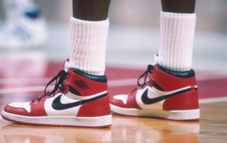
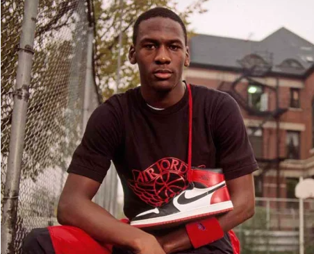

AIR JORDAN
Fue a mediados de los años 80 cuando Nike creó la marca Jordan y,
gracias a su buena acogida, siguieron
lanzando un nuevo modelo cada temporada con la idea de ir renovando el calzado deportivo de Michael Jordan. Las
primeras Air Jordan 1 se crearon a medida para el jugador, pero tiempo después ya se empezaron a fabricar tallas
estándar para cualquier persona.Aunque existen más de 30 modelos en la colección, lo cierto es que las primeras
siguen siendo las más queridas por el público. Por eso, en esta ocasión queremos centrarnos solo en ellas y
contarte la historia de las Air Jordan 1, además de algunas curiosidades.

INICIO COMPLICADO PARA LAS PRIMERAS ZAPATILLAS
Al principio Michael Jordan no quería firmar con Nike.Al jugador de los Chicago Bulls no le convencían
demasiado las zapatillas de Nike, a las que incluso criticó diciendo que parecían «zapatillas del diablo».
Tampoco le gustaba el grosor de la entresuela, demasiado alto para él, que prefería notar con más precisión el
suelo de la cancha.Sin embargo, este comentario fue muy importante ya que llegó a oídos de Nike. Fue entonces
cuando el diseñador Peter Moore decidió reducir el tamaño de la mediasuela y marcar un nuevo camino en el
calzado de la marca.
Las Nike Air Jordan 1 se pusieron a la venta de forma oficial en 1985 y serían las primeras de muchas. Llegaron
con un diseño high top muy propio del calzado de baloncesto, es decir, con una caña alta que cubriera el
tobillo. También destacaba el logo Swoosh de Nike en el lateral y el primero de los logos de Air Jordan
compuesto por un balón de baloncesto con alas. En 1987 cuando Nike presentó el famoso logo Jumpman, que
consistía en la propia silueta de Michael Jordan saltando por los aires a punto de marcar un mate.
UNA ZAPATILLA CON MULTITUD DE COLABORACIONES
Las Air Jordan 1 pasaron a ser las zapatillas favoritas de la moda urbana. Aunque su popularidad siempre se
ha mantenido, lo cierto es que en los últimos años ha crecido todavía más gracias a colaboraciones sorprendentes
con otras marcas o artistas.
Las Nike Air Jordan 1 se pusieron a la venta de forma oficial en 1985 y serían las primeras de muchas. Llegaron
con un diseño high top muy propio del calzado de baloncesto, es decir, con una caña alta que cubriera el
tobillo. También destacaba el logo Swoosh de Nike en el lateral y el primero de los logos de Air Jordan
compuesto por un balón de baloncesto con alas. En 1987 cuando Nike presentó el famoso logo Jumpman, que
consistía en la propia silueta de Michael Jordan saltando por los aires a punto de marcar un mate.
LOS COLOROS MAS EMBLEMATICOS DE AIR JORDAN 1
Los colores más emblemáticos de Air Jordan 1
Hay infinidad de versiones y de colorways de las Jordan 1 y siguen saliendo más y más cada mes, porque su éxito
nunca se detiene. Aquí llega un repaso de algunos de los colores más destacados, aunque hay muchos más.
- Bred: Es el color OG, con una combinación de negro y rojo.
- Chicago: Es principalmente blanco y rojo, pero también tiene detalles en negro.
- Royal: Es como la versión Bred, pero sustituyendo el rojo por el azul.
- Shattered Backboard:Existen varios modelos, pero en casi todos ellos se junta naranja, negro y blanco
- UNC: Sus colores son blanco y azul claro.